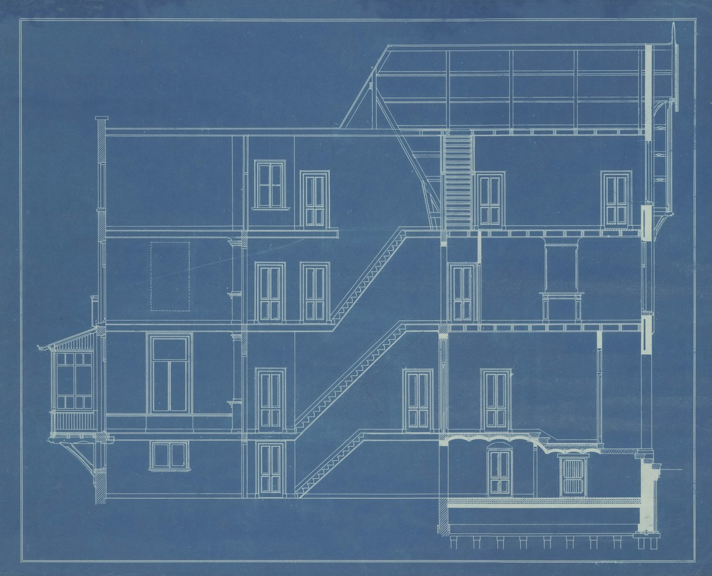

The Cost of Shared Understanding
Producing code got cheap, more or less overnight, because language models turn out to be translators before they are anything else. We have spent two years talking about what that actually changes, and the answer we keep arriving at is not about speed. The hard problem of software was always social, people agreeing on what to build and understanding it together, and that problem has not become cheap at all. Writing code slowly was how teams came to understand their systems; the understanding came free with the effort, and nobody ever had to plan for it. Take the effort away and the understanding stops arriving, without anyone deciding anything. So it has to be kept on purpose now: what the system does, and why, written where the whole team can read it, not just the engineers. In return the code itself can be demoted, into a box nobody needs to open, as long as you can still ask it why it is the way it is.
The residue. Photograph: Tim Mossholder, on Unsplash.
Last week one of us stood in front of thirty people, engineers, product managers and designers, with a claim the two of us have been circling for two years: producing code is getting cheap, because these language models are, before anything else, translators. They turn intent into code, code into explanation, one format into any other, and to a good enough translator a comment, a specification and the code itself are the same thing said three ways. This is a hypothesis, and the fact that an entire industry is acting as if it were true is not evidence. We will treat it as true anyway, because that is where the interesting consequences start.
One thing does not get cheap: agreeing on what to build. It never has, and it may never. When one step in a process collapses in price, the queue forms at the step that did not. This essay is about that queue.
The part that was always hard
Shared understanding was always the difficult part of software, and most of the field's history can be read as attempts at it. The difficulty is not even ours alone. Psychologists of conversation worked out in the early nineties that mutual understanding has to be built and confirmed, turn by turn; silence is not agreement, and a contribution needs positive evidence that it landed (Clark and Brennan, 1991). Inside software, the classic field study of large projects found the same three problems everywhere it looked: thin domain knowledge, conflicting and fluctuating requirements, communication breakdowns (Curtis, Krasner and Iscoe, 1988). That is our list, measured, thirty-eight years ago.
The sharpest statement of what a team actually has came from Peter Naur in 1985: programming is theory building. The real product is not the code but the theory in the builders' heads, the understanding of what the system is for and why it is the way it is. The code is the residue the theory leaves behind. A mathematical result can be copied in one line; the proof is what tells you why it holds and what happens when the problem shifts. A team holding the result but not the proof can repeat itself accurately and adapt not at all.
The profession has spent decades answering this with a ladder of concessions, each rung conceding a little more to the developer. The code is the truth, so read the code. The code is hard to read, so we made it self-documenting: structured programming, objects, patterns, clean code, domain-driven design, fifty years of fighting for understanding from inside the code. And it worked, up to a point. Code really can be an expressive artifact.
But the cap was never expressiveness. It was readership. However well the code expresses the theory, the theory ends up stored in a room most of its owners cannot enter. And they are its owners: the why of a system comes from product, design, the domain, the users. It never comes from the developers alone. Brooks and Conway said the quiet part decades ago: the hard problems of software are people problems. The theory was not wrong so much as mislaid.
One clarification before going on, because the title invites a naive reading. Shared understanding does not mean everyone understanding everything. The research on team cognition is fairly blunt about this: teams whose knowledge interlocks, each member holding a different piece plus a map of who holds the rest, outperform teams whose knowledge is merely identical, by roughly a factor of two on team process. Everyone held a piece of the why. The work is making the pieces meet.
The theory moves out to the whole team
The first thing free translation buys is an artifact everyone can read. The format in which a system is described stops being dictated by the toolchain and becomes a choice, and the sensible way to make that choice is by readership: what can the people who own the why actually read, write and argue over. The answer is rarely code; more often it is behaviour, and the reasons behind it.
There is arithmetic here, no philosophy required. Developers already spend roughly 58 percent of their time comprehending existing code (Xia et al., 2018). Production was the expensive part; comprehension was the majority part. Make production nearly free and the constraint moves to where the time already goes.
The obvious objection is Naur's own: the theory lives in heads, and much of it cannot be told. We think the objection has quietly expired. The theory went unwritten because writing it was never worth the cost, and what did get written died in silence; studies of documentation put the average staleness at 4.7 years behind the code (Tan et al., 2024). Both of those economics just changed. The machine sits where the theory leaks out anyway, in conversations, in reviews, in the question that gets asked twice, and it can capture what it hears, organise it, and express it in each reader's register. Nobody has to tell what they cannot tell; the tacit surfaces in work and talk, and the machine harvests it.
This is also why the essay is addressed to product and design people as much as to developers. When the system's description is behaviour and reasons, product writes in it, design writes in it, engineering writes in it. The practices converge on the same material, closer together than they have ever been.
What quietly breaks if nobody does this
Here is the uncomfortable part. The understanding we had was never planned. It was a byproduct of code being expensive to write, the way fitness used to be a byproduct of walking to work. Nobody decided to exercise; the distance made them. Move closer, and the exercise stops without anyone making a decision. Remove the expensive step, and the thinking that rode on it stops the same way, silently, and nothing announces the stopping.
Nobody planned it; the walking made it. Photograph: Lili Popper, on Unsplash.
This is now measured. In a randomised trial published by Anthropic in January 2026, engineers who built a feature with AI assistance scored seventeen points lower on comprehension of what they had just built than those who built it by hand, 50 percent against 67, and the effect was clearest in exactly the group that delegated most. Those who used the model to ask conceptual questions retained nearly as much as the control group.
Worse, we cannot feel it happening. In a widely discussed METR study from last year, experienced developers forecast that AI tools would speed them up by 24 percent, reported afterwards that they had been sped up by about 20, and had, by that study's measurement, been slowed by 19; outside experts had guessed 39. We would not lean on the numbers. It was one study of sixteen developers, its methods have been argued over, the models have improved a great deal since, and METR themselves say the effect resists measurement. The gap is harder to argue away: felt speed and measured speed came apart by some forty points, in careful people, and none of them could tell from the inside. Speed is treacherously subjective. We ran a small version of this on the workshop audience. Twenty of twenty-one said AI made them faster, most with high confidence, none said slower. They may all be right. The study above is the reason we hold the confidence more lightly than the claim.
There is already a word for what this produces at scale: workslop, fluent output passed along by someone who does not understand it, work that looks finished and quietly transfers the burden of comprehension to whoever receives it. Grounding again: a document nobody could have written themselves is a contribution with no evidence that anyone holds it.
The code gets demoted
If the theory moves out of the code, every developer asks the same question next: then what is the code? Our answer is that it gets demoted, and the demotion has a test. A piece of code may become a box you never open exactly when you can put behaviour in and get a why back out, and not before.
The box. Photograph: Tommy Diner, on Unsplash.
We should be precise about what changes, because the nearest analogy misleads. Compiler output became unreadable and nobody minded; generated code does not have to go the same way. It can stay engineer-readable, it costs nothing to ask for that, and there is no reason not to. What changes is the code's standing: it stops being the source, the thing humans keep alive, and becomes an output that happens to be inspectable. Readability becomes an aesthetic property rather than a functional one. Between the description and the box there is a seam, and the craft moves there: specifications clear enough that the translation can be trusted, and nothing left more opaque than it needs to be.
The resistance to this will not be technical. The best-loved sentence in the field's canon, from Structure and Interpretation of Computer Programs, says that programs must be written for people to read, and only incidentally for machines to execute. We were raised on it too. But it was an aspiration, not a description: a correction aimed at a practice that wrote for the computer alone, fought from inside a medium the computer had chosen. Now that the machine has stopped caring how it is fed, we can afford to admit what that instruction was up against all along. The code was for the machine, and the fight for the human reader can finally leave the medium. Developers have heard a version of this before. When compilers arrived, hand-coders judged their output as assembly and found it bad assembly. They were right, and it did not matter, because assembly had stopped being where the truth lived. What is being asked of developers now is not a new tool but a change of identity, from author of the source to keeper of the seam. The hard problem is social, and this arrow moves at the speed of the people being asked to stop being the source.
There is fine print, and it is forty years old. Bainbridge pointed out in 1983 that automation is supervised by people who learned the manual version, and that this arrangement quietly rides on their skills. Today's engineers can open the box because they grew up inside it. The next generation cannot. The box rides on a one-generation loan, and the written theory is the collateral we are proposing.
Without this section, everything above collapses into advice the field has ignored for fifty years: write better documentation. That is an addition, and additions lose to deadlines every time. What we are describing is a trade: the written theory replaces the code as the thing humans keep alive.
The licence
The two moves are one move. The code is only allowed to become a box because the theory moved out into the light. The box earns its lid.
Who can read the artifact?
The whole argument in one picture. Hover or tap a dot for what it stands for.
How to read this. The drawing borrows its shape from a Wardley map, and those are not self-explanatory, so: each dot is an artifact a software team keeps, and the lines between dots mean one depends on the other. The vertical position is only bookkeeping, things near the top are close to what the team and its stakeholders actually need, things near the bottom are plumbing. The axis that matters is the horizontal one: readership, who can actually read that artifact, from no one on the left to anyone on the right. (A Wardley map proper has evolution there.)
The arrows are the essay. The theory of the system, its behaviour and its written why move right, out of single heads and out of the code, into a form the whole team can read. Code goes the other way, and mostly down: it sinks deeper into the plumbing, toward a box nobody needs to open, drifting a little back toward single heads as it goes. The black bar across its arrow is inertia, and it is social, not technical: developer identity. The hollow dot, assembly, is the precedent: a generation's craft that already sank, and nobody misses reading it.
Chad Fowler has named the raw material: every mature system, he writes, is carrying around lessons that were never written down, encoded as validations, retries, timeouts, workflows and exceptions. The implementation remembers. Here is what happens when you then ask the box about one of those lessons. Ask the system why a call to the payment provider retries three times. If the reason was ever recorded, the vendor's API was flaky, there was an incident two years ago, the retry count came out of a Tuesday postmortem, then the model retrieves the true story and tells it in your language, whether you are an engineer or a product manager. If the reason was never recorded, the model does not say so. It composes something plausible: retries improve resilience in distributed systems. Fluent, generic, wrong, and indistinguishable from the outside. Workslop, turned inward.
So the precondition has to be said out loud: the reasons must be written down, at the moment they exist, by the people who hold them. No written why, no closed box. And this is where the silent decay of the earlier section turns dangerous. While the box is open, missing understanding shows up as a question someone has to go answer; once it closes, it shows up as a confident answer that happens to be false. The written theory is the licence.
The experiment
We are running the experiment ourselves, on one of the systems we work on.
The system lives on a weekly loop. Its description, a collection of composable wikis, feature specifications, behaviour scenarios in Gherkin, is the only artifact we keep alive. Much of what is inside the description is itself drafted by the models; we read it, correct it, and intervene where it matters. Whoever does the typing, the work itself happens in the description and nowhere else. Every week, agents rebuild the software from scratch, from the description alone, with no memory of the previous build. Independent agents then score the result against every build that came before it. Whatever last week taught goes into Monday's edits of the description, and nothing unwritten survives the weekend. One mechanical detail matters more than it looks: the builder is prevented from reading the scoring tests, so it cannot aim at the checklist while the description stays bad. The description has to carry the theory, because nothing else gets through.

Described well enough to build again. Blueprint: Amsterdam City Archives, on Unsplash.
Naur, of all people, prescribed this gesture. He wrote that a team holding the theory could discard the program and rebuild it at no higher, and possibly lower, cost. But for him the discard was grief: it was what you did when the theory had died with the team and the residue was worthless. Here the same gesture means the opposite: the discard is proof. If the rebuild succeeds, the theory has been captured; the rebuild is the receipt.
We hold the practice more lightly than the principle. Weekly regeneration is a validation instrument, not necessarily a development model; one can imagine futures where a module with a stable interface stands for years until its description changes, and how this lands in ordinary teams is genuinely open. And the evidence is what it is: one system, early cycles, a sample of one, reported by the people running it. Hold it accordingly. What it demonstrates does not depend on any of that: after a few Saturdays you know exactly which artifacts carry the theory, because everything else dies on the weekend and nothing breaks.
Others are circling the same spot. Chad Fowler, again: he used to ask how long it would take your team to rebuild your system from scratch, as a health question, and now writes about regenerative software outright. Hazy Research has taken to treating the implementation as a cache over the description. The framing is spreading.
What the cheapness is for
Maybe speed was never the point. Everyone is spending the new cheapness on producing more, faster, and we cannot be sure that part is even working. The prize sits elsewhere: in what we choose to build, how we check it, and how well we understand it together, and that last one has been the bottleneck since the field began.
And there is a gain here we never had, not even in the good old days that never quite existed. Software has never answered why. A codebase tells you what it does, in merciless detail, and tells you nothing about why, and the people who knew leave. With the theory written down and a translator to interrogate it, why becomes an answerable question for the first time.
Producing code got cheap. Understanding each other did not, and may never. What we were given is the time to do it properly, for the first time since the field began.